A four-minute zombie comedy for Halloween, with the marketing strategy developed in pre-production alongside the script.
Every asset here is built to go out in versions and be judged by what holds attention, so the plan at the bottom of the page is less a schedule than a set of experiments with a start date.
Each piece below is designed to go out in several versions. Whatever holds attention gets recut, reformatted and pushed further, and whatever doesn't is swapped out the same day.
The sketch
Horizontal · 4 min
Five people in a boarded-up room. Dean comes in bitten and begs to be killed, and Terry volunteers a little too fast. Cut four ways: long, tight, with the teeth bit, and with different music and voiceover.
ScriptFour shorts
Vertical · under a minute each
Extra Teeth, Don't Touch Me, Prep and The Loud One, set in the same world with the same cast and shot the same day. Each stands alone.
The bitsTrailers
Horizontal · 90 sec
Cut from the sketch for the feature it pretends to be, in several versions, so the opening can be tested before anything gets boosted.
Trailer scriptPosters
Key art · five
A single title across five images, released a few days apart to see which stops people.
See the postersTreatment
13 pages
Tone, look, references, cast, crew and the case for the project, written for the people being asked to join.
DeckCast page
nfa.studio/voluntary
The link actors and crew receive. Logline, three documents, open roles, the date.
Cast pageA single title across five images, rolled out a few days apart. Whichever stops people goes up on the wall.
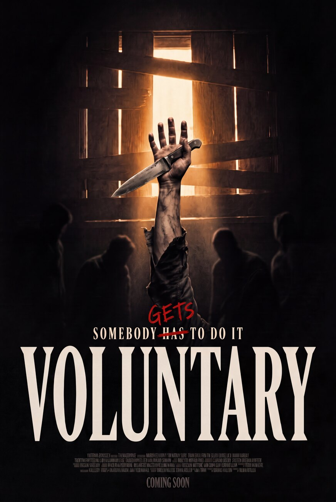
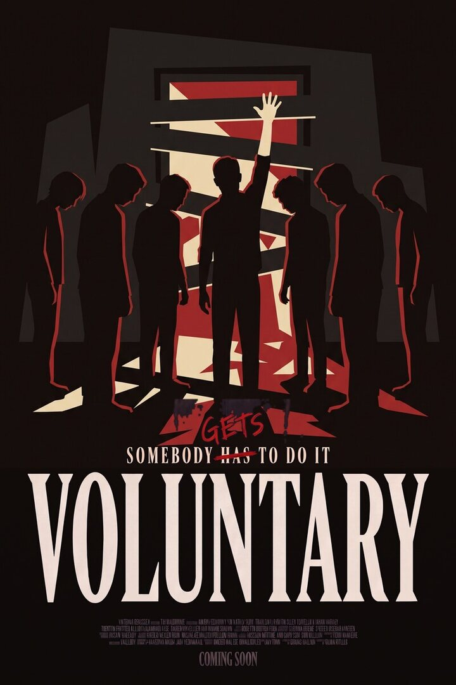
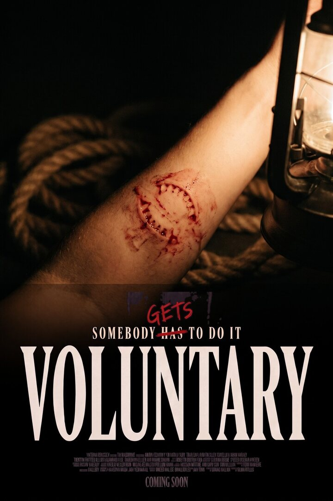
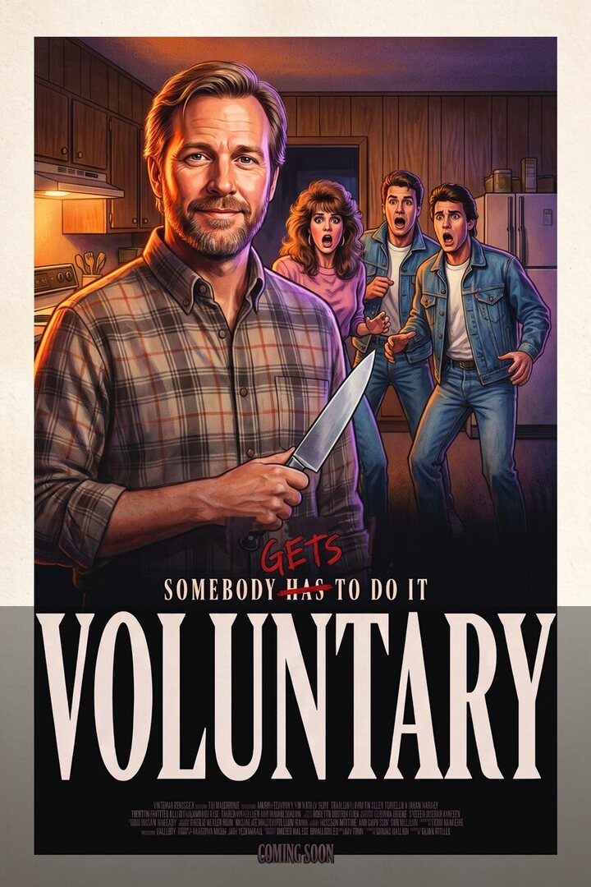
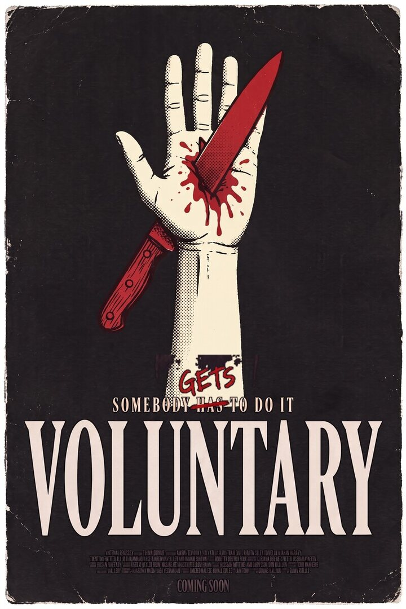
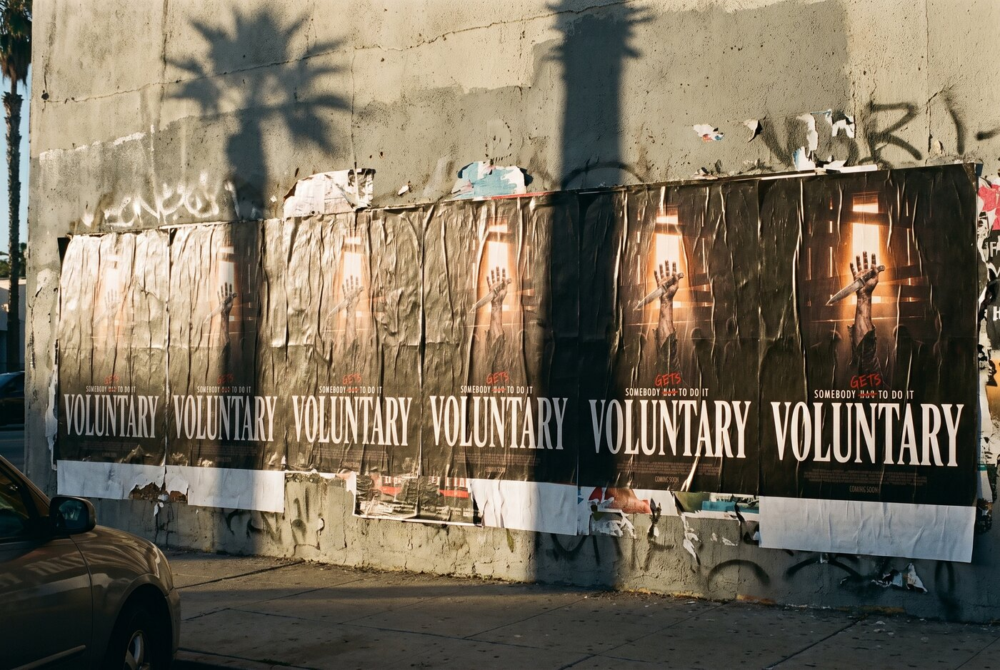
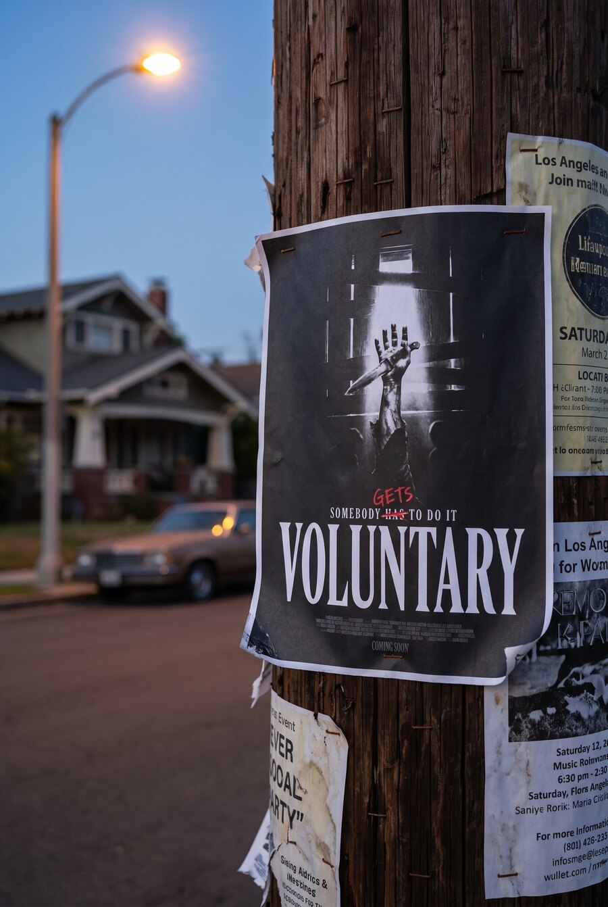
Concept mockups, AI-generated, of the key art on an East Hollywood wall and a telephone pole.
Zombie point of view chasing a woman down a dark street for most of a minute, until she turns, screams "DON'T TOUCH ME" straight down the lens, and the zombie backs off terrified.
The same clip runs as video, as stills and as carousels under every caption that fits, each version pushed as a trial reel, with the ones that travel handed to the larger meme and clipper accounts and boosted from there, starting with the three captions below.
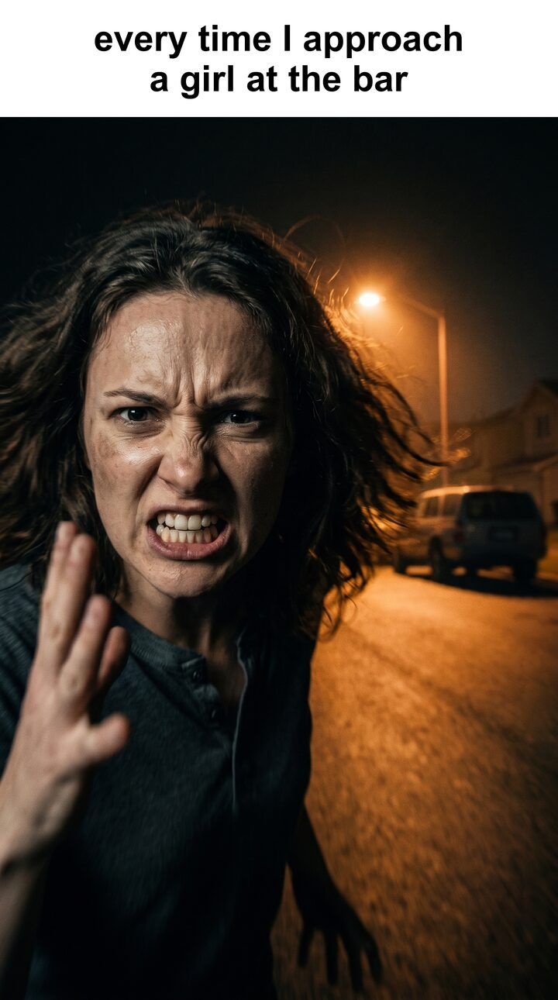
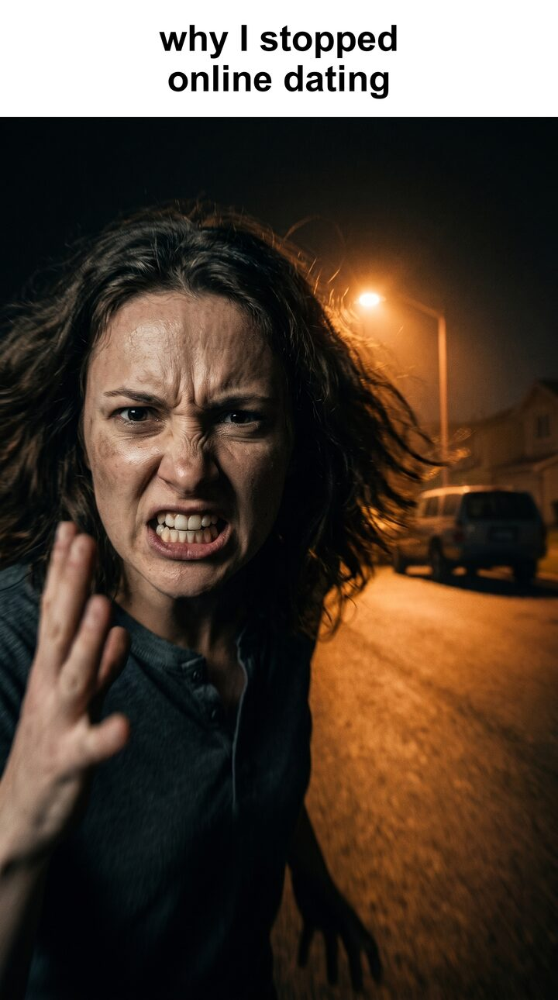
Concept still, AI-generated in pre-production to lock the frame before casting.
A single shoot day feeds five weeks of releases. Horizontal cuts go to YouTube, vertical cuts everywhere else, and each piece runs as a trial reel first, so the audience decides what earns a budget and what gets recut.
| When | What goes out |
|---|---|
| Week 1 | Posters, a new image every three days. Trailers, four cuts out as trial reels: long, tight, with the teeth bit, and with different music and voiceover. Whatever holds gets recut into more.Horizontal, plus vertical crops |
| Week 2 | Don't Touch Me as the short, then the meme stills, then the carousels, every version on trial reels. The best go to the larger meme and clipper accounts and get boosted.Vertical |
| Week 3 | Prep and The Loud One. Behind-the-scenes clips and stills start here and keep running through the rest of the month.Vertical |
| Week 4Halloween | The sketch, in the cut the trailers earned. Extra Teeth the morning after.Horizontal, then vertical |
| Week 5 | Bloopers, and a second push behind whatever the month proved out.Both |
The order is a plan, not a rule. Whatever people stay on moves up and gets doubled down on.
Three cameras, every frame composed for 16:9 first, and every shot marked with how the vertical comes out: a crop, an extra take, or a split screen across two cameras for the ensemble beats.
The boards are drawn in code, so a reblock is a number change.
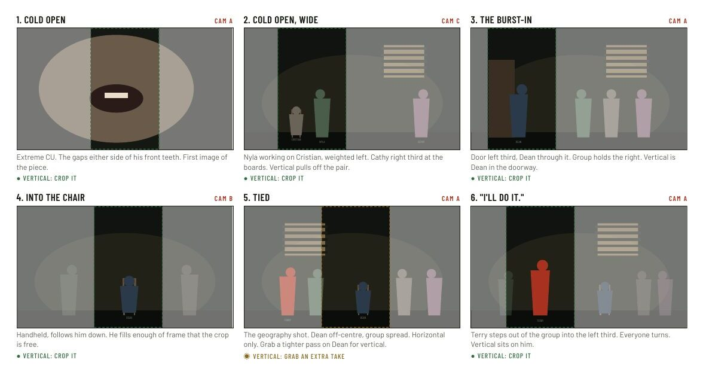
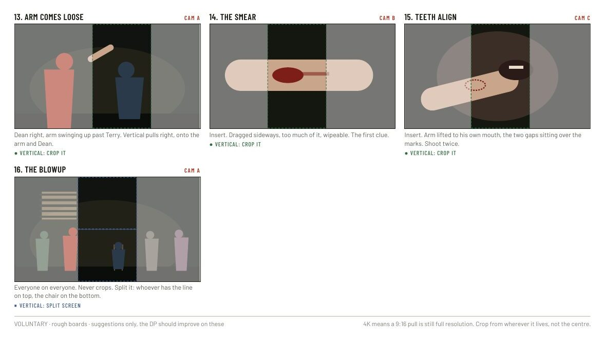
There's never just one trailer. The opening goes out five ways, the version people stay on gets pushed, and because the edit and the posting calendar are the same system, a recut is up the same day.
Crazy Stupid Money runs this way every week, which is how a small team keeps five platforms moving without an agency.
Josh Peters. Creative director, Los Angeles.